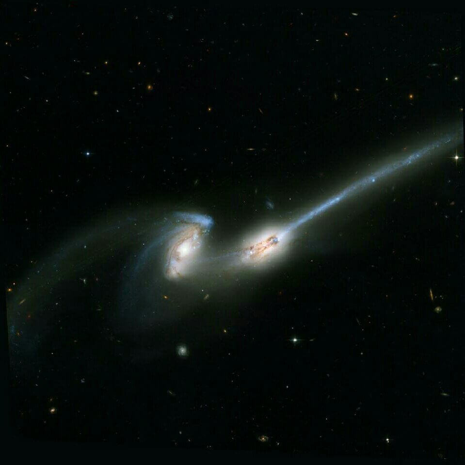
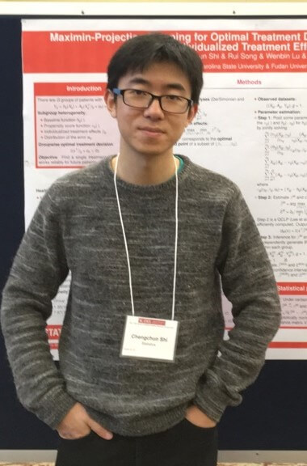

FAI-Seminar
-
 公众号：人工智能基础研究
公众号：人工智能基础研究 -
 B站：FAI-Seminar
B站：FAI-Seminar
最近新闻 / News!
Update: 2025.3.4
日程安排 / Schedule
2025 R02
| Time | Speaker | Talk Title | Talk Info | Paper | Video |
| 05/22 | 席浩诚 (UCB) |
Sparse VideoGen: Accelerating Video Diffusion Transformers with Spatial-Temporal Sparsity in Attention Mechanisms | Talk Info | [1] | B站 |
| 05/30 | 蔡榆杭 (UCB) |
Implicit Bias of Gradient Descent in Deep Neural Networks | Talk Info | [1] | B站 |
| 06/06 | 王子轩 (Princeton) |
Learning Compositional Functions with Transformers from Easy-to-Hard Data | Talk Info | [1] | B站 |
| 06/13 | 李柄辉 （北京大学） |
Theoretical Understanding of Adversarial Examples in Deep Learning: Expressive Power and Training Dynamics | Talk Info | [1],[2],[3] | B站 |
| 06/20 | 王嘉宸(Princeton) | How to Recommend a Dataset for Model Training Team? Rethinking Proxy-Model-based Technique | Talk Info | [1] | B站 |
| 06/27 | 张雨舜 (香港中文大学(深圳)) |
Towards Quantifying the Hessian Structure of Neural Networks | Talk Info | [1] | B站 |
| 07/04 | Dmitry Rybin (香港中文大学(深圳)) |
XX^T Can Be Faster | Talk Info | [1] | B站 |
| 07/25 | 王一飞（MIT） | Your Next-Token Prediction and Transformers Are Biased for Long-context Modeling | Talk Info | [1],[2] | B站 |
| 08/01 | 付杰 (上海AI Lab) |
Re:Form -- Reducing Human Priors in Scalable Formal Software Verification with RL in LLMs: A Preliminary Study on Dafny | Talk Info | [1] | B站 |
| 08/15 | 杨新宇 (CMU) |
Parallel Encoding and Decoding for Scalable, Efficient Reasoning and Agentic Flows | Talk Info | [1],[2] | B站 |
| 08/22 | 陈谋祥 （浙江大学） |
Parallel Scaling Law for Language Models | Talk Info | [1] | B站 |
| 09/05 | 陈思宇 (Yale) |
Taming Polysemanticity in LLMs: Provable Feature Recovery via Sparse Autoencoders | Talk Info | [1] | B站 |
| 09/06 | 苏炜杰 (UPenn) |
The ICML 2023 Ranking Experiment: Examining Author Self-Assessment in ML/AI Peer Review Using the Isotonic Mechanism | Talk Info | [1], [2], [3], [4], [5] | B站 |
| 10/17 | 史成春 (LSE) |
Doubly Robust Alignment for Large Language Models | Talk Info | [1] | B站 |
| 10/24 | 何海韵 (Hkust) |
Distributional Information Embedding: A Framework for LLM Watermarking | Talk Info | [1], [2] | B站 |
| 10/31 | 李子牛 (香港中文大学(深圳)) |
Knapsack RL: Unlocking Exploration of LLMs via Optimizing Budget Allocation | Talk Info | [1] | B站 |
| 11/07 | 江昊哲 (UCB) |
On Surjectivity of Neural Networks: Can you elicit any behavior from your model? | Talk Info | [1] | B站 |
| 11/14 | 戴言 (MIT) |
Dynamic Allocation of Reusable Resources to Strategic Agents under Long-Term Constraints | Talk Info | [1] | B站 |
| 11/21 | 徐翊轩 (CMU) |
Not All Rollouts are Useful: Down-Sampling Rollouts in LLM Reinforcement Learning | Talk Info | [1] | B站 |
| 11/28 | 朱芮捷 (UCSC) |
Scaling Latent Reasoning via Looped Language Models | Talk Info | [1] | B站 |
2025 R01
| Time | Speaker | Talk Title | Talk Info | Paper | Video |
| 03/07 | 陈乐偲 (清华大学) |
Computationally Faster Newton Methods by Lazy Evaluations | Talk Info | [1], [2] | B站 |
| 03/14 | 孙若愚 (香港中文大学(深圳)) |
Understanding and Improving LLM Training: Insights into Adam and Advent of Adam-mini | Talk Info | [1], [2],[3], [4] | B站 |
| 03/21 | 吕凯风 (清华大学) |
Scaling Laws and Phase Transitions in Training LLMs | Talk Info | [1] | B站 |
| 03/28 | 温凯越 (Stanford) |
River Valleys: Understanding the WSD Learning Rate through Loss Landscape | Talk Info | [1] | B站 |
| 04/04 | 黄凯旋(Princeton) | MATH-Perturb: Benchmarking LLMs' Math Reasoning Abilities against Hard Perturbations | Talk Info | [1] | B站 |
| 04/12 | 卢睿 (清华大学) |
Undiscover the mechanism of textual hallucination in diffusion models | Talk Info | [1] | B站 |
| 04/18 | 杨松琳 (MIT) |
Advances in Scalable Linear RNNs: DeltaNet and its variants | Talk Info | [1],[2],[3],[4],[5],[6],[7],[8] | B站 |
| 04/25 | ICLR break | ||||
| 05/02 | 陈焕然 (清华大学) |
Diffusion Models are (Certifiably) Robust Classifiers | Talk Info | [1],[2],[3] | B站 |
2024 R02
| Time | Speaker | Talk Title | Talk Info | Paper | Video |
| 07/19 | 张博航 (北京大学) |
Beyond Weisfeiler-Lehman: A Quantitative Framework for GNN Expressiveness | Talk Info | [1], [2], [3] |
B站 |
| 08/09 | 黎善达 (CMU) |
Inference Scaling Law of Large Language Models and Second-Prize Winning Solution of AIMO | Talk Info | [1], [2] | B站 |
| 08/16 | 王天浩 (TTIC) |
Tractable training dynamics of transformers for in-context learning | Talk Info | [1], [2] | B站 |
| 08/23 | 吴京风 (Berkeley) |
Reimaging Gradient Descent: Large Stepsize, Oscillation, and Acceleration | Talk Info | [1] | B站 |
| 08/30 | 马梓业 (港城大) |
Navigating the non-convex landscape via amplifying escape directions of saddle points | Talk Info | [1], [2], [3] |
B站 |
| 11/01 | 刘勇 (中国人民大学) |
Can Retrieval Augmented Generation (RAG) Enhance the LLM’s Reasoning Capabilities? | Talk Info | B站 |
2024 R01
| Time | Speaker | Talk Title | Talk Info | Paper | Video |
| Special talk 05/31 | 李建 (清华大学) |
Generalization Error and Implicit Bias of Gradient Methods in Deep Learning | Talk Info | B站 | |
| 03/08 | 翟润天 (CMU) |
On the Generalization of Representation Learning and Big Foundation Models | Talk Info | [1, 2] | B站 |
| 03/15 | 罗胜杰 (北京大学) |
Enabling Efficient Equivariant Operations in the Fourier Basis via Gaunt Tensor Products | Talk Info | [1] | B站 |
| 03/22 | 高天宇(Princeton) | Long-Context Language Modeling with Parallel Context Encoding | Talk Info | B站 | |
| 03/29 | 邹荻凡 (香港大学) |
Faster Sampling without Isoperimetry via Diffusion-based Monte Carlo | Talk Info | [1] | B站 |
| 04/05 | 陆一平 (NYU) |
Simulation-Calibrated Scientific Machine Learning | Talk Info | [1] | B站 |
| 04/12 | 俞鼎力(Princeton) | Tensor Programs VI: Feature Learning in Infinite-Depth Neural Networks | Talk Info | [1] | B站 |
| 04/19 | 吕凯风(Princeton) | Understanding the Limitations of Neural Networks on Algorithmic Reasoning | Talk Info | [1, 2] | B站 |
| 04/26 | 李禹辰 (CMU) |
Towards Mathematical Understanding of Modern Language Models | Talk Info | [1, 2, 3, 4] |
B站 |
2023 R03
| Time | Speaker | Talk Title | Talk Info | Paper | Video |
| Special Talk 2/16 | 胡威 (UMich) |
Hidden Structures in Neural Network Representations | Talk Info | [1, 2] | B站 |
| 11/10 | 陈乐偲 (清华大学) |
Near-Optimal Nonconvex-Strongly-Convex Bilevel Optimization with Fully First-Order Oracles | Talk Info | [1] | B站 |
| 11/17 | 张博航 (北京大学) |
Towards Revealing the Mystery behind Chain of Thought: A Theoretical Perspective | Talk Info | [1] | B站 |
| 11/24 | 顾欣然 (清华大学) |
A Quadratic Synchronization Rule for Distributed Deep Learning | Talk Info | [1] | B站 |
| 12/1 | 石佳欣(DeepMind) | MultiresConv: From Wavelet Theory to Long Context Modeling with Neural Networks | Talk Info | [1] | B站 |
| 12/8 | 范凤磊 (香港中文 大学) |
In Pursuit of Deciphering ReLU Networks and Beyond | Talk Info | [1] | B站 |
| 12/15 | NeurIPS break | ||||
| 12/22 | 刘冰彬 (CMU) |
Thinking Fast with Transformers: algorithmic reasoning with shortcuts | Talk Info | [1] (ICLR 23' oral), [2] (NeurIPS 23' spotlight) | B站 |
| 12/29 | 温凯越 (清华大学) |
Transformers are uninterpretable with myopic methods: a case study with bounded Dyck grammars | Talk Info | [1] | B站 |
| 1/12 | 游凯超 (清华大学) |
Understand, Learn, and Adopt the PyTorch compiler (torch.compile) | Talk Info | [1, 2, 3] | B站 |
2023 R02
| Time | Speaker | Talk Title | Paper | Video |
| (Special)09/15 | 李志远 (Stanford) |
The Generalization Benefit of Flatnes Regularization | [1][2] | B站 |
| 06/23 | 张博航 (北京大学) |
Understanding the Expressivity of Subgraph-based GNNs for Graph Learning | [1] | B站 |
| 06/30 | 罗胜杰 (北京大学) |
One Transformer Can Understand Both 2D & 3D Molecular Data | [1] | B站 |
| 07/07 | 刘子鸣 (MIT) |
Intelligence from hunger | [1], [2] | B站 |
| 07/14 | 马鉴昊 (UMich) |
Robust Sparse Mean Estimation | [1] | B站 |
| 07/21 | 金及凯 (北京大学) |
Minimax optimal operator learning | [1] | B站 |
| 07/28 | ICML break | |||
| 08/04 | 王博涵 (中国科学 技术大学) |
When and Why Momentum Accelerates SGD | [1] | B站 |
| 08/11 | 滕佳烨 (清华大学) |
Predictive inference with feature conformal prediction | [1] | B站 |
| 08/18 | 蔡天乐 (Princeton) |
Large Language Models as Tool Makers | [1] | B站 |
2023 R01
| Time | Speaker | Talk Title | Paper | Video |
| (Special) 05/26 | 张景昭 (清华大学) |
Two Phases of Scaling Laws for Nearest Neighbor Classifiers | [1] | B站 |
| 03/03 | 张鼎怀 (Mila) |
GFlowNets: Exploration for Probabilistic Inference | [1],[2],[3],[4] | B站 |
| 03/10 | 顾欣然 (清华大学) |
Why (and When) does Local SGD Generalize Better than SGD | [1] | B站 |
| 03/17 | 王博涵 (中国科学 技术大学) |
Provable Benefit of Adaptivity in ADAM | [1] | B站 |
| 03/24 | 温凯越 (清华大学) |
How Does Sharpness-Aware Minimization Minimize Sharpness? | [1] | B站 |
| 03/31 | 张博航 (北京大学) |
Rethinking the Expressive Power of GNNs via Graph Biconnectivity | [1] (ICLR 2023 Outstanding Paper) | B站 |
| 04/07 | 马鉴昊(UMich) | Escaping Saddle Points Or Not? | [1], [2] | B站 |
| 04/14 | 陈乐偲 (复旦大学) |
On Bilevel Optimization without Lower-level Strong Convexity | [1] | B站 |
| 04/21 | 黄凯旋(Princeton) | Score Approximation, Estimation and Distribution Recovery of Diffusion Models on Low-Dimensional Data | [1] | B站 |
| 04/28 | 戴言 (清华大学) |
Variance-Aware Sparse Linear Bandits | [1] | B站 |
组织者 / Organizers


贡献者 / Contributors
-
 蔡天乐(Princeton)
蔡天乐(Princeton) -
 黄凯旋(Princeton)
黄凯旋(Princeton) -
 戴言(MIT)
戴言(MIT) -
 陈乐偲(清华大学)
陈乐偲(清华大学) -
 刘子鸣(MIT)
刘子鸣(MIT) -
 金及凯(Stanford)
金及凯(Stanford) -
 刘冰彬(CMU)
刘冰彬(CMU) -
 石佳欣(DeepMind)
石佳欣(DeepMind) -
范凤磊(港中文)
-
 游凯超(清华大学)
游凯超(清华大学) -
 翟润天(CMU)
翟润天(CMU) -
 高天宇(Princeton)
高天宇(Princeton) -
 邹荻凡(香港大学)
邹荻凡(香港大学) -
 陆一平(NYU)
陆一平(NYU) -
 俞鼎力(MSR)
俞鼎力(MSR) -
 李禹辰(CMU)
李禹辰(CMU) -
黎善达(CMU)
-
王天浩(UCSD)
-
吴京风(Berkeley)
-
 马梓业(港城大)
马梓业(港城大) -
刘勇(中国人民大学)
-
 张景昭(清华大学)
张景昭(清华大学) -
 李志远(TTIC)
李志远(TTIC) -
 胡威(UMich)
胡威(UMich) -
 李建(清华大学)
李建(清华大学) -
付杰(上海 AI Lab)
-
孙若愚(港中深)
-
Dmitry Rybin(香港中文大学(深圳))
-
何海韵(Hkust)
-
席浩诚(UCB)
-
 杨松琳(MIT)
杨松琳(MIT) -

王一飞（MIT）
-
 杨新宇(CMU)
杨新宇(CMU) -
.jpg) 江昊哲(UCB)
江昊哲(UCB) -
王嘉宸(Princeton)
-
 蔡榆杭(UCB)
蔡榆杭(UCB) -
陈谋祥（浙江大学）
-
陈思宇(Yale)
-
陈焕然(清华大学)
-
苏炜杰(UPenn)
-

史成春(LSE)
-
李柄辉（北京大学）
-
张雨舜(香港中文大学(深圳))
-
.jpg) 李子牛（香港中文大学(深圳)）
李子牛（香港中文大学(深圳)） -
徐翊轩（CMU）
-
朱芮捷(UCSC)
协办单位 / Universities


合作组织 / Partners
-
 AI TIME 论道(公众号)
AI TIME 论道(公众号) -
 轻松参会(公众号)
轻松参会(公众号) -
 蔻享学术(公众号)
蔻享学术(公众号)